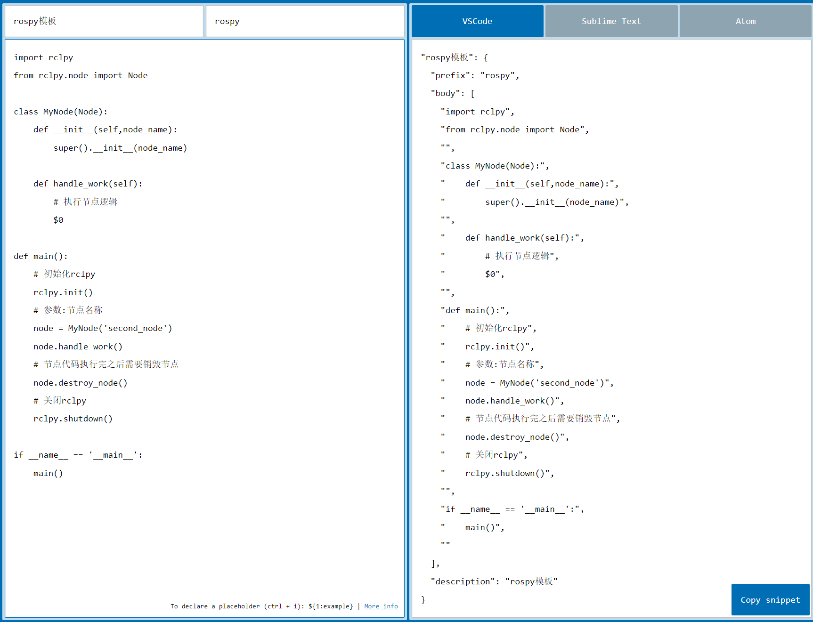
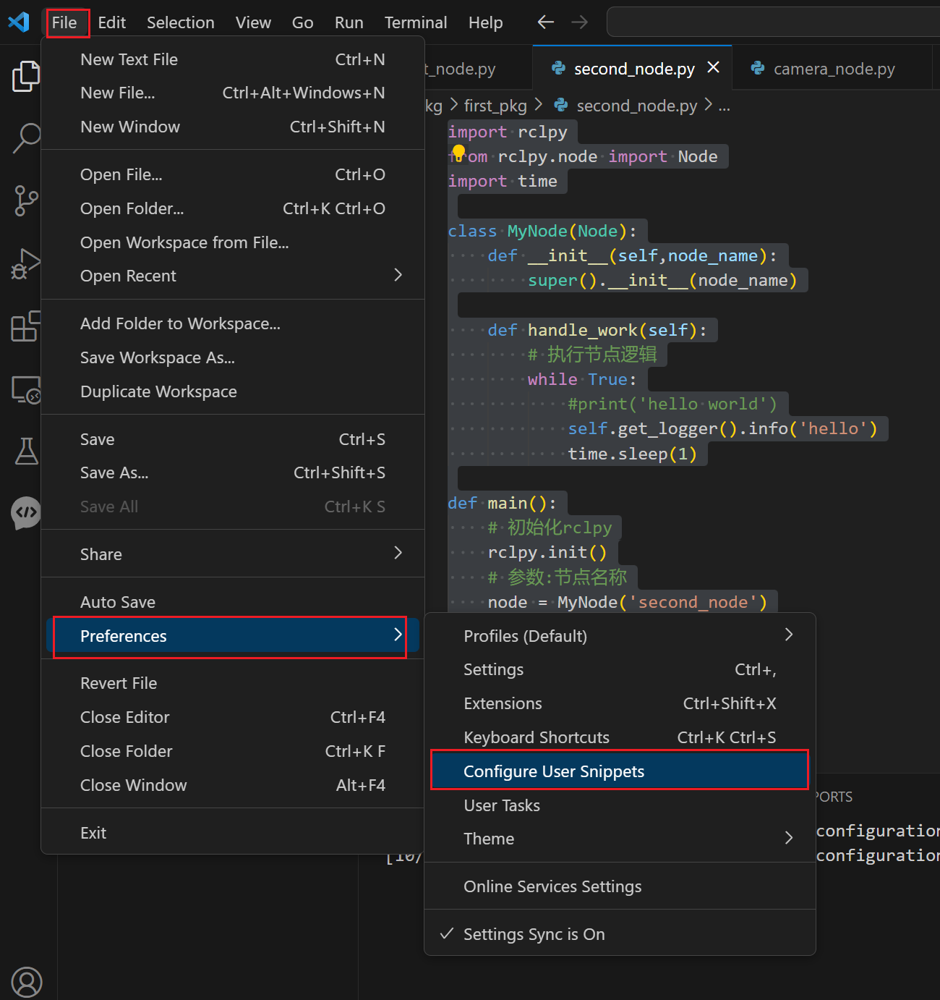
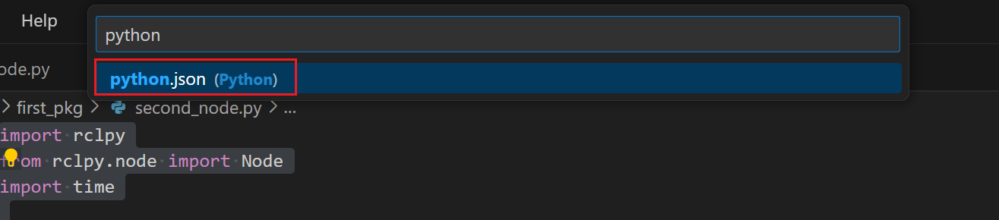
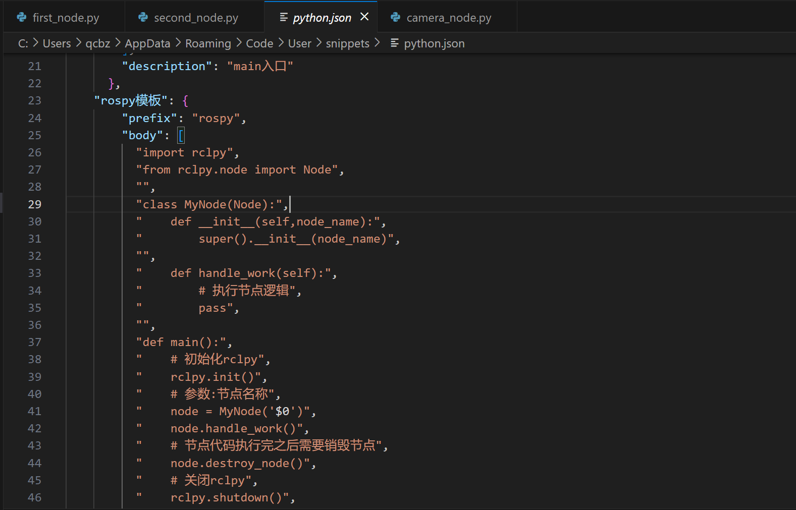
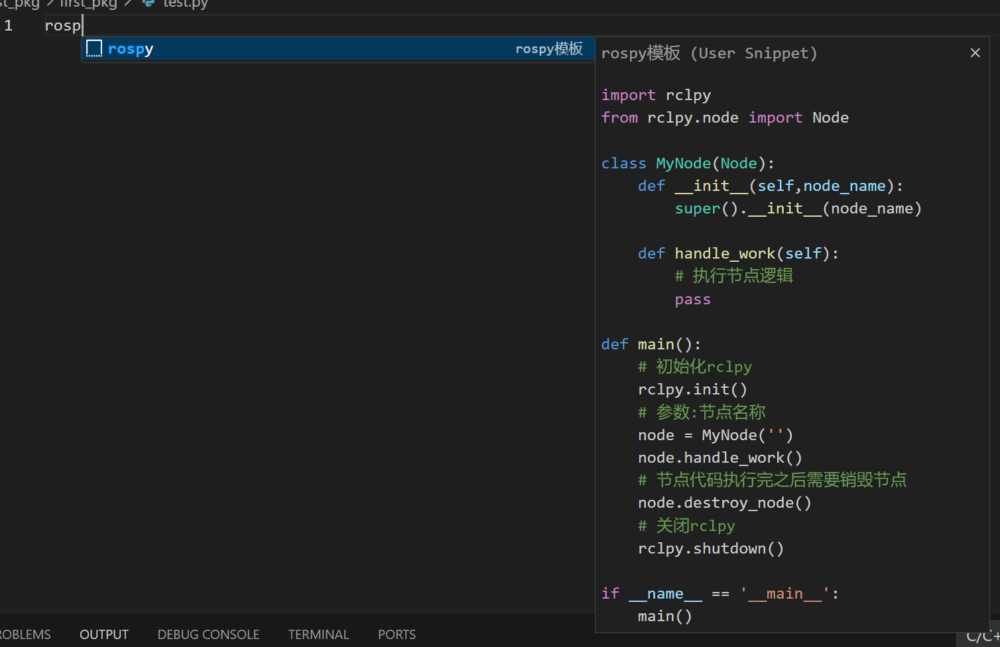

<!DOCTYPE lake>
<p data-lake-id="u31d9ef49" id="u31d9ef49"><span class="lake-fontsize-12" data-lake-id="ub40e2fa5" id="ub40e2fa5" style="color: rgb(77, 77, 77)">在写代码的过程中，有些代码片段是需要经常写的，我们在</span><span data-lake-id="u62453320" id="u62453320">VSCode</span><span class="lake-fontsize-12" data-lake-id="u43104ad5" id="u43104ad5" style="color: rgb(77, 77, 77)">中我们可以生成一个代码片段，方便我们快速生成，提高效率。</span><span data-lake-id="u4e58ff3e" id="u4e58ff3e"><br/></span><span class="lake-fontsize-12" data-lake-id="udf3d74c0" id="udf3d74c0" style="color: rgb(77, 77, 77)">VSCode中的代码片段有固定的格式，如果是自己写那种格式的话，比较慢且可能会写错，所以我们一般会借助于一个在线工具来完成。</span></p><h2 data-lake-id="s6WvN" id="s6WvN"><span data-lake-id="ue3cf2ff9" id="ue3cf2ff9" style="color: rgb(77, 77, 77)">模板代码步骤</span></h2><p data-lake-id="u4bbb6f7a" id="u4bbb6f7a"><span class="lake-fontsize-12" data-lake-id="u4577cdb0" id="u4577cdb0" style="color: rgba(0, 0, 0, 0.75)">第一步，复制自己需要生成代码片段的代码</span></p><span class="yuque-card-unsupported">[codeblock]</span><p data-lake-id="u9f70be56" id="u9f70be56"><span class="lake-fontsize-12" data-lake-id="u2af9d760" id="u2af9d760" style="color: rgba(0, 0, 0, 0.75)">第二步，https://snippet-generator.app/在该网站中生成代码片段</span></p><p data-lake-id="u8f43f372" id="u8f43f372"></p><p data-lake-id="u6aba20f6" id="u6aba20f6"><span class="lake-fontsize-12" data-lake-id="ue0cc1e87" id="ue0cc1e87" style="color: rgba(0, 0, 0, 0.75)">第三步，在VSCode中生成代码片段</span></p><p data-lake-id="ue76dcfb1" id="ue76dcfb1"></p><p data-lake-id="u8863391f" id="u8863391f"><span data-lake-id="u36781959" id="u36781959">选择python.json</span></p><p data-lake-id="u9d8d65fe" id="u9d8d65fe"></p><p data-lake-id="u5a055019" id="u5a055019"><span data-lake-id="u41365451" id="u41365451">将生成的代码粘贴进来即可</span></p><p data-lake-id="u0d4a1e08" id="u0d4a1e08"></p><p data-lake-id="u959c747d" id="u959c747d"><span class="lake-fontsize-12" data-lake-id="uaa7362bc" id="uaa7362bc" style="color: rgba(0, 0, 0, 0.75)">第四步，使用模板</span></p><p data-lake-id="u74993f64" id="u74993f64"></p>